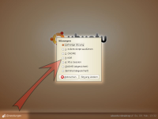
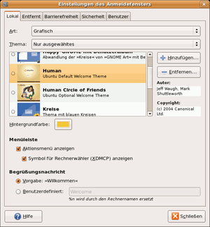
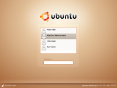

GDM
Archivierte Anleitung
Dieser Artikel wurde archiviert, da er - oder Teile daraus - nur noch unter einer älteren Ubuntu-Version nutzbar ist. Diese Anleitung wird vom Wiki-Team weder auf Richtigkeit überprüft noch anderweitig gepflegt. Zusätzlich wurde der Artikel für weitere Änderungen gesperrt.
Anmerkung: Ab Ubuntu 9.10 kam GDM 2.x zum Einsatz (siehe Archiv/GDM2). Die neuste Version ist aktuell 3.x, dazu findet man im Artikel GDM mehr. Dieser Artikel war bis einschließlich Ubuntu 9.04 gültig.
Zum Verständnis dieses Artikels sind folgende Seiten hilfreich:
GDM  (kurz für GNOME Display Manager) kümmert sich bei den Desktop-Umgebungen GNOME und Xfce um die grafische Anmeldung von Benutzern am System ("login"). Ein Displaymanager erlaubt ferner, (bei Bedarf) unterschiedliche Desktop-Umgebungen zu starten oder auch entfernte Rechner über ein Netzwerk auszuwählen. GDM lässt sich durch in GNOME und Xfce integrierte Konfigurationswerkzeuge leicht einrichten und ist durch zahlreiche Themen optisch anpassbar.
(kurz für GNOME Display Manager) kümmert sich bei den Desktop-Umgebungen GNOME und Xfce um die grafische Anmeldung von Benutzern am System ("login"). Ein Displaymanager erlaubt ferner, (bei Bedarf) unterschiedliche Desktop-Umgebungen zu starten oder auch entfernte Rechner über ein Netzwerk auszuwählen. GDM lässt sich durch in GNOME und Xfce integrierte Konfigurationswerkzeuge leicht einrichten und ist durch zahlreiche Themen optisch anpassbar.
Einstellungen¶
Mit "Einstellungen" sind hier nicht systemweite Einstellungen (die immer für alle Benutzer des Systems gelten) gemeint. Sie werden direkt vor dem Einloggen gewählt. Hier kann jeder Benutzer festlegen, welche Sitzung (meist eine Desktop-Umgebung) gestartet werden soll und welche Sprache und welche Tastaturbelegung diese verwenden soll. So kann der eine Benutzer GNOME starten lassen und ein anderer KDE usw. Voraussetzung ist natürlich, dass verschiedene Desktop-Umgebungen installiert sind.
Es können nur die Sprachen ausgewählt werden, die bereits im System installiert sind. Möchte man eine nicht angebotene Sprache auswählen können, so müssen zuerst zusätzliche Sprachpakete nachinstalliert werden.
 Vor dem Anmelden findet man links unten ein Menü, in dem man verschiedene Einstellungen vornehmen kann. Diese Einstellungen gelten aber nur für den Benutzer, der sich als nächster anmeldet.
Die Auswahl der Sprache erfolgt unter
"Einstellungen -> Sprache wählen...",
die der Sitzung unter
"Einstellungen -> Sitzung wählen...".
Nach der Auswahl von Sprache bzw. Sitzung kann bestimmt werden, ob diese Auswahl von nun an immer gelten soll oder ob dies nur eine einmalige Ausnahme darstellt. Entscheidet man sich für letzteres, dann gilt die Auswahl nur für die nächste gestartete Sitzung.
Konfiguration¶
 Zu finden ist das Konfigurationsprogramm unter GNOME in
"System -> Systemverwaltung -> Anmeldebildschirm"
Unter Xfce verbirgt sich dieses unter
"Applications -> Einstellungen -> Anmeldefenster"
Fehlt dieser Eintrag oder benutzt man eine Desktop-Umgebung, die den Assistenten nicht in den Menüs führt, so kann man das Programm auch mit
gksudo gdmsetup
aufrufen. Das GDM-Konfigurationswerkzeug bietet viele verschiedene Funktionen, die beliebtesten sind:
Automatische Anmeldung eines Benutzers
Zeitgesteuerte Anmeldung eines Benutzers aktivieren
Neues GDM-Thema installieren und auswählen
Willkommensnachricht anpassen
Möchte man die Konfiguration von Hand bearbeiten [1] oder hat Probleme mit dem Konfigurationsprogramm, so findet man die GDM-Konfigurationsdatei unter /etc/gdm/gdm.conf.
Anmeldung mit Benutzerfoto¶
 Aus Windows XP kennt man vielleicht ein Anmeldefenster, in dem man Benutzer durch einen Klick auf ein festgelegtes Benutzerfoto auswählen kann. Auch das ist mit GDM möglich.
Standardmässig wird ein Design mit Benutzeralbum verwendet.
Bild als Benutzerfoto auswählen¶
Die Benutzer können dann innerhalb von GNOME über das Menü
"System -> Einstellungen -> Persönliche Angaben"
das eigene Benutzerfoto bequem ändern. Wer will, kann auch die gewünschte Bilddatei als ~/.face im Homeverzeichnis ablegen oder gdmphotosetup in einem Terminal [2] aufrufen.
Sitzungen im GDM-Menü¶
Die Dateien für die verschiedenen Sitzungen werden im Verzeichnis /usr/share/xsessions/ als .desktop abgelegt und können mit einem Editor [1] bearbeitet werden. Die Syntax ist immer gleich:
[Desktop Entry] Encoding=UTF-8 Name=Fluxbox Session <- der Name der Sitzung Comment=Unsere Sitzung <- ein Kommentar Exec=startfluxbox <- das auszuführende Programm Icon= Type=Application
Durch Hinzufügen einer weiteren Datei lassen sich somit auch andere Fenstermanager wie Fluxbox, IceWM usw. zur Session-Auswahl des GDMs hinzufügen.
Benutzer ohne Passwort einloggen¶
Das automatische Anmelden eines einzelnen Nutzers ohne Eingabe des Passwortes ist in der grafischen Konfiguration von GDM unter dem Reiter "Sicherheit" leicht möglich.
Achtung!
Benutzt man verschlüsselte /home-Verzeichnisse, muss auf das automatische Anmelden verzichtet werden, da sonst das System nicht mehr zu benutzen ist. Siehe auch diesen 446743 . Ist genau dieses aber geschehen, editiert [1] man im Verzeichnis /etc/gdm/ die Datei gdm.conf-custom und setzt die Einträge TimedLoginEnable und AutomaticLoginEnable auf false:
Im Folgenden wird jedoch beschrieben, wie man bei einem Mehrbenutzer-System einen Anmeldebildschirm realisieren kann, bei dem sich beliebige Nutzer durch einen einfachen Mausklick anmelden können, ohne ihr Passwort eingeben zu müssen. Dabei ist es frei wählbar, welche Nutzer ihr Passwort eingeben müssen und welche nicht.
mit Userliste als Textdatei¶
Als Einstieg sollte man in Gnome ein Thema mit Benutzerfotos auswählen (Siehe "Anmeldung mit Benutzerfoto" weiter oben in diesem Artikel). Als nächstes wird festgelegt, welche Nutzer ihr Passwort nicht einzugeben brauchen. Dazu erstellt man die Datei /etc/gdmnopassusers (Editor mit Root-Rechten erforderlich [1]) und fügt zeilenweise die Benutzernamen hinzu. Alle diese Benutzer können sich dann ohne ein Passwort-Eingabe am System anmelden.
anton emil paula
Nachdem man die Änderungen gespeichert hat, muss noch die Datei /etc/pam.d/gdm verändert werden. Exakt vor der Zeile
@include common-auth
fügt man folgende Zeile ein
auth sufficient pam_listfile.so file=/etc/gdmnopassusers sense=allow item=user
Die Datei sollte anschließend in etwa so aussehen
#%PAM-1.0 auth requisite pam_nologin.so auth required pam_env.so auth sufficient pam_listfile.so file=/etc/gdmnopassusers sense=allow item=user @include common-auth @include common-account session required pam_limits.so @include common-session @include common-password
Nach dem Speichern der Änderungen ist beim nächsten Start des GDM-Anmeldebildschirms das Anmelden der gewählten Nutzer durch Mausklick möglich.
Die Benutzer, denen der passwortlose Login erlaubt sein soll, können entweder in einer Textdatei oder in einer Benutzergruppe gespeichert werden. Letzteres wird durch eine Option in den Benutzereinstellungen unterstützt.
mit Usergruppe¶
Unter "System -> Systemverwaltung -> Benutzer und Gruppen" gibt es die inaktive Option "Don't ask for a password on login". Um diese Option zu aktivieren, muss wie oben beschrieben die Datei /etc/pam.d/gdm bearbeitet werden und diesmal aber diese Zeile hinzugefügt werden:
auth sufficient pam_succeed_if.so user ingroup nopasswdlogin
Die Datei sollte anschließend in etwa so aussehen:
#%PAM-1.0 auth requisite pam_nologin.so auth required pam_env.so readenv=1 auth required pam_env.so readenv=1 envfile=/etc/default/locale auth sufficient pam_succeed_if.so user ingroup nopasswdlogin @include common-auth auth optional pam_gnome_keyring.so @include common-account session [success=ok ignore=ignore module_unknown=ignore default=bad] pam_selinux.so close session required pam_limits.so @include common-session session [success=ok ignore=ignore module_unknown=ignore default=bad] pam_selinux.so open session optional pam_gnome_keyring.so auto_start @include common-password
Anschließend ist es noch notwendig, die Benutzergruppe "nopasswdlogin" mit folgendem Befehl zu erstellen:
sudo addgroup --system nopasswdlogin
Da das schon von vornherein aktiv sein sollte, gibt es dazu diesen Bugreport (mit Patch).
Auflösung einstellen¶
Die von GDM verwendete Bildschirmauflösung kann mittels der hier beschriebene Methode festgelegt werden.
Entfernter Login¶
Besitzt man mehrere Linux-Rechner in einem LAN, so ist es möglich, sich über das Netzwerkprotokoll XDMCP auf einem entfernten Linux-Rechner anzumelden. Allerdings ist hierbei zu beachten, dass die Kommunikation über XDMCP unverschlüsselt stattfindet. Es sollte daher ausschließlich innerhalb eines LANs verwendet werden und nicht über das Internet.
Aus diesen Gründen ist auch der "entfernte Login" von Haus aus nicht aktiviert. Die entsprechenden Optionen findet man im Konfigurationswerkzeug unter der Lasche Entfernt. Dort muss die Art der Anmeldung auf z.B. Wie lokale Anmeldung gesetzt werden.
Wer die entfernte Anmeldung verschlüsseln bzw. tunneln möchte, findet die entsprechende Anleitung unter SSH.
Mehrere GDM-Instanzen¶
Man kann auch mehrere Instanzen von GDM gleichzeitig auf einem Rechner laufen lassen. Man kann so mehrere Nutzer gleichzeitig anmelden und einfach mit Tastatur zwischen ihnen umschalten. Umgeschaltet wird mit
Strg +
Alt +
F1 -
F12 . Um eine zweite Instanz von GDM zu starten, muss die Datei /etc/gdm/gdm-cdd.conf editiert werden. Unter [servers] muss ein weiterer Standard-GDM definiert werden:
[servers] 0=Standard 1=Standard
Bei einem Neustart von GDM gibt es nun zwei GDM-Anmeldebildschirme, auf denen man sich als unterschiedlicher Nutzer anmelden kann. Umgeschaltet wird mit: Strg + Alt + F7 und Strg + Alt + F9 . Der X-Server belegt auf dem unter FirstVT angegebenen virtuellen Terminal die erste (=0) GDM-Instanz. Danach sucht er sich das nächst-mögliche freie virtuelle Terminal. Da das VT 8 belegt ist, ist das nächste freie VT 9.
Reservieren von VT 3 und VT 4 für GDM bzw. X¶
Um die Umschaltung komfortabler auf das dritte und vierte virtuelle Terminal zu legen, muss zuerst das getty-Programm auf der dritten und vierten Konsole deaktivieren. Dazu wird die Datei /etc/event.d/tty3 bzw. /etc/event.d/tty4 editiert. Dort ist je ein Eintrag
start on runlevel 2 start on runlevel 3
Dieser Eintrag wird geändert in
stop on runlevel 2 stop on runlevel 3
Hinweis:
Nach dieser Änderung befinden sich auf tty3 und tty4 keine Text-Konsolen mehr!
Achtung!
Mit dem getty (das den Login-Prompt an der Konsole bereitstellt) muss sehr vorsichtig umgegangen werden. Man hat sich sonst sehr schnell aus dem System ausgesperrt. Das gerade beschriebene nicht mit der Datei tty1 machen!
Ist das vollbracht, kann man GDM mitteilen, dass die erste GDM-Instanz auf VT 3 zu belegen ist. Das zweite GDM-Instanz wird dann automatisch auf VT4 gelegt. Dazu fügt man in der Datei /etc/gdm/gdm.conf-custom unter [daemon] folgenden Absatz hinzu:
[daemon] FirstVT=3
Jetzt wird GDM auf VT 3 und VT 4 gestartet. Das Umschalten funktioniert nun mit Strg + Alt + F3 bzw. Strg + Alt + F4
Tipps¶
Beenden und (Neu-)Starten von GDM samt XServer¶
Manchmal kommt es vor, dass man bestimmte Aufgaben ohne laufenden XServer bzw. auf der Konsole durchführen möchte. Mit den Tastenkombinationen Tasten Strg + Alt + F1 bis F6 kann man in sechs unabhängige Textkonsolen wechseln. Zurück zu GDM oder zur laufenden Sitzung mit graphischer Oberfläche gelangt man mit Alt + F7 ( Strg ist nur unter GDM nötig).
Von einer Textkonsole aus kann man GDM mitsamt Xserver wie folgt beenden, starten oder neustarten:
| Aktion | Befehl |
| Beenden | sudo /etc/init.d/gdm stop |
| Starten | sudo /etc/init.d/gdm start |
| Neustarten | sudo /etc/init.d/gdm restart |
Benutzer(liste) im Anmeldebildschirm ausblenden¶
alle Benutzer¶
Sollen im Anmeldebildschirm keine Benutzer angezeigt werden, so kann man dies über folgenden Befehl einstellen:
sudo -u gdm gconftool-2 --set --type bool /apps/gdm/simple-greeter/disable_user_list true
Danach zeigt der Anmeldebildschirm keine bekannten Benutzernamen mehr an; man muss sowohl Benutzernamen als auch Passwort eingeben.
Rückgängig macht man das Ganze, indem man am Ende anstelle von true den Wert false angibt.
einzelne Benutzer¶
Möchte man nur einzelne Benutzer ausblenden, z. B. johnny, den Administrator des Systems, so kann man die Datei /etc/gdm/custom.conf mit dem Abschnitt
[greeter] Exclude=johnny,nobody
versehen. nobody muss ggf. auch aufgenommen werden, wenn er im Anmeldebildschirm angezeigt wird.
Danach muss GDM neu gestartet werden (Achtung: alle Programme werden geschlossen, also vorher alles speichern!):
sudo /etc/init.d/gdm restart
Problemlösungen¶
Endlosschleife beim Anmelden¶
Es kommt vor, dass sich Benutzer beim Anmelden in einer Endlosschleife wiederfinden. Nach der Eingabe des Passwortes und dessen Bestätigung verschwindet der GDM-Anmeldebildschirm, und der Bildschirm wird schwarz. Kurz darauf lädt der GDM-Loginscreen erneut. Das ist beliebig oft wiederholbar. Auch das Neuinstallieren von gdm und gnome-desktop, Löschen aller Config-Dateien, Erstellen neuer Benutzer etc. nützt nichts. Die Anmeldung auf der Konsole funktioniert aber wie gehabt.
Die einfache Lösung: durch zu wenig freien Speicherplatz im System ist es nicht mehr möglich, einen temp-Ordner zu erstellen und zu beschreiben. Durch Freigeben von Speicherplatz (beispielsweise Löschen einiger Dateien, Dateisystemvergrößerung oder Auslagerung von Dateien) wird das Problem behoben. Danach ist eine grafische Anmeldung wieder möglich.
Kein Herunterfahren im Abmeldedialog¶
Es kommt vor, dass Benutzer im Abmeldedialog von GNOME die Option zum Herunterfahren des Rechners nicht mehr finden. Dies kommt daher, dass beispielsweise mit der Installation eines Metapaketes wie kubuntu-desktop auch ein anderer Displaymanager wie KDM installiert wird.
Damit diese Option erscheint, muss man GDM als "Display Manager" benutzen, außerdem muß bis Ubuntu 9.04 im GDM-Konfigurationswerkzeug unter "Lokal -> Menüleiste" die Option "Aktionsmenü anzeigen" aktiviert sein. Sollte nach dem Rechnerstart ein anderer "Display Manager" erscheinen, so kann man über den Befehl [2]:
sudo dpkg-reconfigure gdm
auswählen, welcher "Display Manager" geladen werden soll.
Links¶
GDM Themes auf gnome-look.org
- mit Vorschaubildern15 Beautiful Ubuntu GDM Themes
- mit Vorschaubildern
- Erstellt mit Inyoka
-
 2004 – 2017 ubuntuusers.de • Einige Rechte vorbehalten
2004 – 2017 ubuntuusers.de • Einige Rechte vorbehalten
Lizenz • Kontakt • Datenschutz • Impressum • Serverstatus -
Serverhousing gespendet von